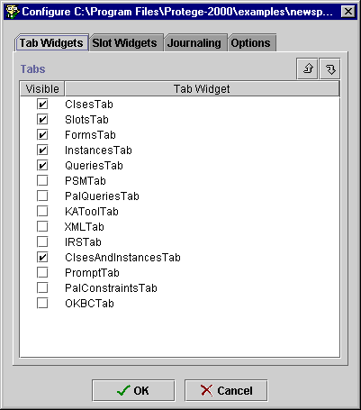
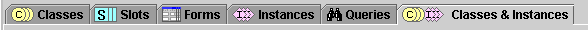

Displaying the Classes & Instances Tab
Displaying the Classes & Instances Tab

To display the Classes & Instances tab:
- Select Configure... from the Project menu.
The Configure dialog box opens.

- Select ClsesAndInstancesTab by clicking on it.
- Click OK.
The Protégé window now has an additional tab.

- Click on the Classes & Instances tab to view a single interface where
you can edit both classes and instances.
Next: Slots Table of Contents
Classes Table of Contents
See also: Instances Table of Contents